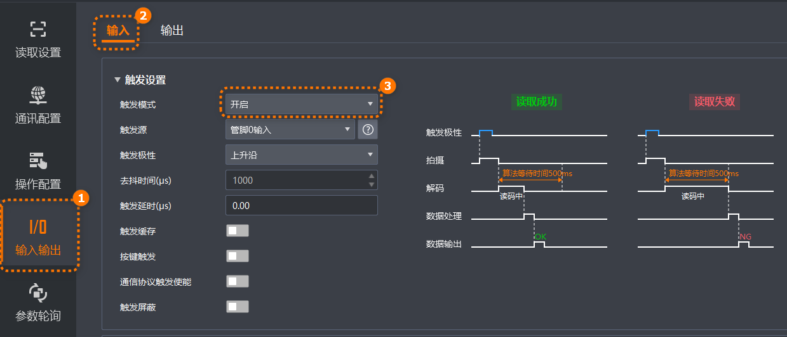
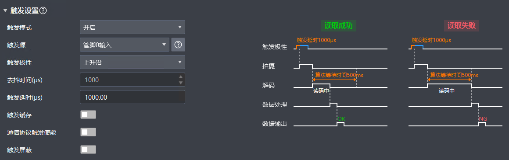

触发设置
当需要根据外部信号或特定条件触发读码器进行图像采集和读码时，需在触发设置部分开启读码器触发模式、选择触发源并配置相关参数。

-
在IDMVS主界面功能导航栏，选择，进入输入配置页签。
-
在触发设置区域的触发模式参数处下拉选择开启。
-
根据实际需求在触发源处下拉选择对应的触发源，可配置触发源及说明如下表所示。
说明-
U口读码器支持的触发源为USB触发及软触发，网口读码器支持USB触发以外的其他触发源。根据型号不同，网口读码器可设置的触发源有所不同，具体请以实际参数为准。
-
在右侧单击，可跳转至硬件用户手册文件夹，打开读码器对应的硬件用户手册查看硬件接线图及说明。
表 1 触发源及工作原理 触发源
说明
软触发
触发信号由软件发出，通过千兆或万兆网传输给读码器进行采图。
管脚0/1/2输入（硬件触发）
外部设备通过I/O接口与读码器进行连接，触发信号由外部设备发出，传输给读码器进行采图。
计数器0
通过计数器的方式给读码器信号进行采图。
TCP服务端
读码器作为TCP服务器，接收外部设备发送的TCP指令触发采图。
UDP触发
外部设备通过发送的UDP指令，给读码器信号进行采图。
串口触发
外部设备通过发送串口指令，给读码器信号进行采图。
自触发
根据配置的触发时间间隔和次数自行执行采图。
主从触发
当主读码器被触发时，触发信号将被发送到从读码器。
说明触发源选择主从触发时，要开启主从工作模式，并将从读码器的触发源设置为主设备，同时启用主读码器命令触发模式。
TCP客户端
读码器作为TCP客户端，接收外部设备发送的TCP指令触发采图。
亮度感应触发
当视野亮度发生变化时自动触发读码和条码输出。相机实时监测图像亮度值变化情况，当变化超过配置的灵敏度阈值时启动读码。
TOF触发
当达到TOF触发阈值时，将发送触发信号给读码器进行采图。
说明仅配备TOF传感器的读码器支持选择此触发源。
USB触发
外部设备通过发送USB指令，给读码器信号进行采图。
说明仅U口设备支持此触发方式。
-
-
根据选择的触发源配置对应参数，参数说明见下文对应章节。
共用参数
每个触发源都可配置参数说明如下。
软触发
触发源选择软触发时，可以通过单击软触发参数处的执行，手动控制进行触发。
管脚0/1/2输入
当触发源选择为管脚0/1/2输入时，读码器会根据管脚0/1/2的信号来进行图像采集和读码。
- 触发极性
-
用于设置触发信号的有效电平类型，可选如下类型。
-
上升沿：当信号从低电平变为高电平时触发。
-
下降沿：当信号从高电平变为低电平时触发。
-
高电平：当信号保持高电平时持续触发。
-
低电平：当信号保持低电平时持续触发。
-
- 去抖时间(μs)
-
设置在检测到触发信号变化后，系统等待信号稳定的时间。用于消除信号因机械或电气原因产生的短暂不稳定现象（即抖动），确保触发信号的稳定性。
- 通信协议触发使能
-
在根据管脚0/1/2的信号进行触发读码器的同时，选择是否允许使用已经配置的TCP、UDP、串口等通信协议触发读码器。
- 触发屏蔽
-
选择是否对一段时间内的新触发进行屏蔽，开启后通过触发屏蔽时间(ms)参数设置时间段，读码器一次触发后将不响应此段时间内的触发信号。
说明当开启触发屏蔽开关后，不支持开启触发缓存。
- 触发开始/结束延迟(μs)
-
说明
-
当触发极性选择“高电平”或“低电平”时可配置这两个参数。
-
触发开始延迟参数值需不大于触发结束延迟参数值。
根据实际需求设置读码器接收触发信号后到开始或结束触发采图的等待时间。
配置参数后可在右侧区域查看对应的时序图，如下图所示。
说明在时序图上双击算法等待时间，可跳转至算法等待时间(ms)参数处调整参数值。

图 3 管脚0输入触发时序图示例 -
计数器0
当触发源选择为计数器0时，读码器将在累计接收至预设计数值的脉冲信号后，自动触发图像采集和读码。
TCP服务端
当触发源选择为TCP服务端时，读码器会通过TCP服务端的方式与外部设备进行通信，以实现触发图像采集和读码。
- 模糊触发
-
选择是否模糊匹配触发文本和停止触发命令字符串，开启此开关后，发送文本只要包含开始触发文本，就启动触发；发送文本只要包含停止停止触发命令字符串，就停止触发。开始触发文本和停止停止触发命令字符串相互包含时，开始触发和停止触发只能进行精准匹配，不再支持模糊触发。
- 命令持续触发
-
设置读码器是否持续保持触发状态，直到接收到相应的停止触发命令。
说明停止触发命令需通过停止触发配置模块配置对应触发源的结束触发条件。
- TCP服务器触发端口
-
设置接收TCP触发指令的TCP服务器端口号。
- TCP服务端触发文本格式
-
设置TCP触发字符格式，可选择字符串或十六进制。
- TCP服务端触发文本/十六进制命令
-
设置TCP触发指令，根据所选TCP服务端触发文本格式参数值，自定义对应格式的触发指令。当文本格式选择十六进制时，可单击参数右侧，将弹出16进制ASCII对照表供选择。
- TCP服务端交互请求文本
-
自定义TCP协议下的握手请求指令。
- TCP服务端交互回复文本
-
自定义TCP协议下的握手应答指令。
- TCP服务器返回数据到触发端口
-
选择是否原路返回输出结果至触发端口处。
- TCP服务端自动重连
-
设置是否开启在网络连接中断后自动尝试重新连接到客户端。
 ，将弹出16进制ASCII对照表供选择。
，将弹出16进制ASCII对照表供选择。UDP触发
当触发源选择为UDP触发时，读码器会通过UDP协议接收外部指令触发图像采集和读码。
- 模糊触发
-
选择是否模糊匹配触发文本和停止触发命令字符串，开启此开关后，发送文本只要包含开始触发文本，就启动触发；发送文本只要包含停止停止触发命令字符串，就停止触发。开始触发文本和停止停止触发命令字符串相互包含时，开始触发和停止触发只能进行精准匹配，不再支持模糊触发。
- 命令持续触发
-
设置读码器是否持续保持触发状态，直到接收到相应的停止触发命令。
说明停止触发命令需通过停止触发配置模块配置对应触发源的结束触发条件。
- UDP触发端口
-
设置UDP触发的端口号。
- UDP触发文本格式
-
设置UDP触发字符格式，可选择字符串或十六进制。
- UDP触发文本/十六进制命令
-
设置UDP触发指令，根据所选UDP触发文本格式参数值，自定义对应格式的触发指令。当文本格式选择十六进制时，可单击参数右侧，将弹出16进制ASCII对照表供选择。
- UDP服务端交互请求文本
-
自定义UDP协议下的请求指令。
- UDP交互回复文本
-
自定义UDP协议下的应答指令。
串口触发
当触发源选择为串口触发时，读码器会通过串口接收的特定指令来触发图像采集和读码。
- 模糊触发
-
选择是否模糊匹配触发文本和停止触发命令字符串，开启此开关后，发送文本只要包含开始触发文本，就启动触发；发送文本只要包含停止停止触发命令字符串，就停止触发。开始触发文本和停止停止触发命令字符串相互包含时，开始触发和停止触发只能进行精准匹配，不再支持模糊触发。
- 命令持续触发
-
设置读码器是否持续保持触发状态，直到接收到相应的停止触发命令。
说明停止触发命令需通过停止触发配置模块配置对应触发源的结束触发条件。
- 串口波特率
-
选择读码器的串口波特率，代表串口每秒传输的位数（bit/s）。
说明请确保读码器和目标设备的串口波特率一致，以避免数据丢失或错误。
- 串口数据位
-
选择数据传输过程中每个字符的位数。可选择7或8，通常设置为 8 位。
说明仅串口数据位选择为8时，支持16进制触发方式。
- 串口停止位
-
设置在字符传输后用于标识字符结束的位数，可选择1或2。
- 串口奇偶校验
-
设置用于检测传输错误的位，可选择如下三种方式：
-
不校验：不使用校验位。
-
奇校验：在数据的最后添加一个校验位，使得数据中1的个数为奇数。接收方收到数据后，检查数据中1的个数是否为奇数，如果不符，则认为数据传输有误。
-
偶校验：在数据的最后添加一个校验位，使得数据中1的个数为偶数。接收方收到数据后，检查数据中1的个数是否为偶数，如果不符，则认为数据传输有误。
-
- 串口触发文本格式
-
设置串口触发字符格式，可选择字符串或十六进制。
- 串口触发文本/十六进制命令
-
设置串口触发指令，根据所选串口触发文本格式参数值，自定义对应格式的触发指令。当文本格式选择十六进制时，可单击参数右侧，将弹出16进制ASCII对照表供选择。
- 串口交互请求文本
-
自定义串口协议下的握手请求指令。
说明当通讯配置处开启“串口协议”时，可配置串口交互请求文本和串口交互回复文本。
- 串口交互回复文本
-
自定义串口协议下的握手应答指令。
自触发
当触发源选择为自触发时，读码器会根据内部设定的参数自行生成触发信号，以实现触发图像采集和读码。
主从触发
当触发源选择为主从触发时，读码器会通过主从模式与其他设备协同工作，实现同步触发图像采集。
TCP客户端
当触发源选择为TCP客户端时，读码器会通过TCP客户端的方式与外部设备进行通信，以实现触发图像采集和读码。
- 模糊触发
-
选择是否模糊匹配触发文本和停止触发命令字符串，开启此开关后，发送文本只要包含开始触发文本，就启动触发；发送文本只要包含停止停止触发命令字符串，就停止触发。开始触发文本和停止停止触发命令字符串相互包含时，开始触发和停止触发只能进行精准匹配，不再支持模糊触发。
- 命令持续触发
-
设置读码器是否持续保持触发状态，直到接收到相应的停止触发命令。
说明停止触发命令需通过停止触发配置模块配置对应触发源的结束触发条件。
- TCP客户端触发IP地址
-
设置TCP触发的主机IP。
- TCP客户端触发端口
-
设置TCP触发的主机端口号。
- TCP客户端触发文本格式
-
设置TCP触发字符格式，可选择字符串或十六进制。
- TCP客户端触发文本/十六进制命令
-
设置TCP触发指令，根据所选TCP客户端触发文本格式参数值，自定义对应格式的触发指令。当文本格式选择十六进制时，可单击参数右侧，将弹出16进制ASCII对照表供选择。
- TCP客户端交互请求文本
-
自定义TCP协议下的握手请求指令。
- TCP客户端交互回复文本
-
自定义TCP协议下的握手应答指令。
- TCP客户端返回数据到触发端口
-
选择是否原路返回输出结果至触发端口处。
亮度感应触发
当触发源选择为亮度感应触发时，读码器会根据视野内亮度的变化自动触发图像采集和读码。